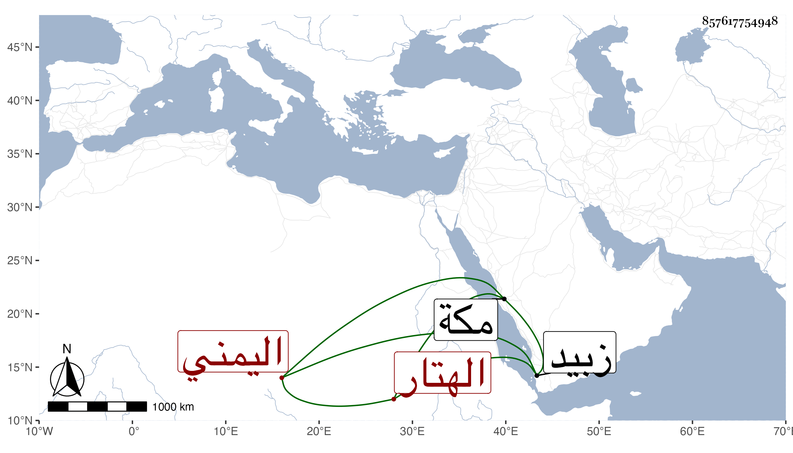

0902Sakhawi.DawLamic.ITO20230111-ara1.EIS1600.857617754948
Biography ID: 857617754948
1226
صديق بن عبد اللطيف بن عيسى الأشيب الهتار اليمني التريبي من نواحي زبيد أحد المتصوفة ممن حج وزار ولقيني في أثناء سنة سبع وتسعين بمكة فسمع مني المسلسل وغيره وعلى غالب سيرة ابن سيد الناس وغيرها وهو انسان ساكن خير أيسر كثير الدعاء لاخوانه وشيوخه والاهتمام بهم وبمؤاخاة من يختاره لذلك كتبت له إجازة أثنيت عليه فيها ، وسافر في أول سنة ثمان وتسعين كتب الله سلامته .
